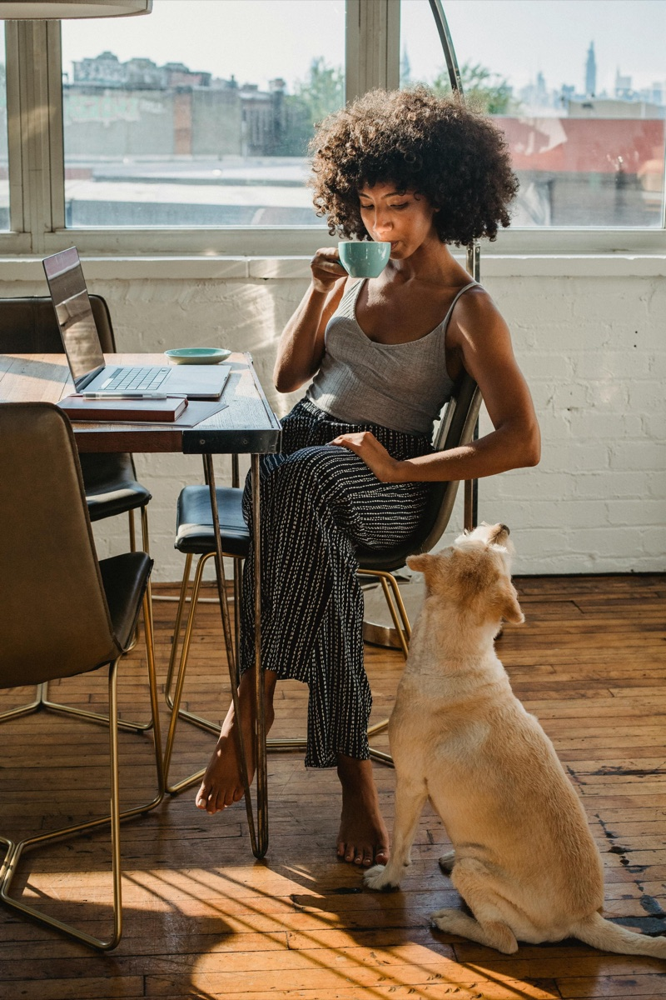
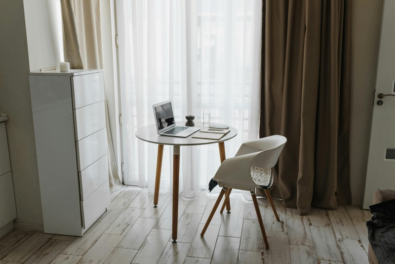

mjcurio · Top Reporter · 412 flags
Got a text saying my "account was locked." Link was trust-bank-alert.info — not the real bank.
We catch what you'd miss so you can do your thing online without worrying about getting scammed. Built by humans, sharpened by AI, powered by millions of reports from people who've been burned before — so you don't have to be.
The B2B ScamAdviser sold confidence to platforms. The B2C ScamAdviser sits in your group chat, calls out the sketchy DMs, and forwards the receipts. Same data. Way less corporate.
Corporate language. Institutional trust signals. "Reliable algorithms." "Comprehensive analysis." Badge of approval from a company you've never heard of.
The friend in the group chat who already checked the link. Zero buzzwords. Plain-talk warnings with receipts. People trust people, not badges. Fast, sharp, and done explaining.
If it looks like a rug pull, we call it a rug pull. No corporate hedge.
We hand you the receipts. You make the call.
Catches the scam before you click the link.
Sounds like a person, not a 90-page PDF.
Millions of users. Institutions can't keep up with that.
Our Voice & Tone Principles embody the essence of who ScamAdviser is as a trusted advisor and scam expert. Clear & Confident reflects our deep expertise and commitment to providing straightforward, actionable guidance. Human & Approachable ensures we communicate warmly and conversationally, making it easy for everyone to engage with us. We chose Informative & Engaging because we believe in capturing attention through practical, insightful content that's always relevant. With Empathetic & Supportive, we show genuine care for our users, understanding their experiences and providing reassurance without judgment. Finally, Alert & Proactive captures our relentless dedication to anticipating threats, actively protecting our community, and inspiring swift, informed actions.
The ScamAdviser wordmark is the logo — it goes on every official surface: app stores, footers, partner decks, press. The bs/d mark is a campaign treatment built for the B2C launch — used in hero moments, social, and editorial. Neither one substitutes for the other.
Minimum clear space around the ScamAdviser wordmark equals the cap-height of the "S." Nothing crops into that frame — not type, not photography, not a background texture.
Minimum clear space around the campaign mark equals the cap-height of the slash ("x"). The slash is always skewed 10° — no other angle, no other slope.
Three tiers. Primary carries the brand across every surface. Secondary adds creativity and dynamism. Tertiary provides depth and flexibility for illustrations and interactive elements.
Inter is the primary typeface used across all communications. Inter Bold is applied to headlines for a strong, attention-grabbing presence, while Inter Medium is used for sub-headlines, ensuring a clean, balanced look.
JetBrains Mono is the designated data typeface for all numerical and technical content, ensuring precise alignment and legibility across trust scores, percentages, and ratings. JetBrains Mono Bold highlights key metrics, while Regular supports supplementary data and interface elements.
Noto Sans is used as the regional typeface for ScamAdviser, particularly in countries where localized language support is essential.
Use for all headlines to ensure prominence and authority. Never use lighter weights for headline roles.
Creates a balanced hierarchy under the headline. Maintains a clean, modern look without competing with H1.
Inter Regular for all body copy. JetBrains Mono exclusively for numbers, scores, and technical data — never for running text.
ScamAdviser's visual storytelling reflects our mission to protect, inform, and empower users in the digital world. Our photography is authentic, human-focused, and clear. Never overly staged, fear-driven, or generic. Every image should build trust, convey expertise, and create an emotional connection with our audience.
Everyday individuals of different ages, backgrounds, and locations engaging with digital life — shopping, banking, messaging, browsing. Authentic, not staged corporate stock.


ScamAdviser as a trusted, human expert: support staff, analysts, partners, or educators helping users or teams. Supports "Trustworthy," "Dedicated" brand traits.
Tight shots of hands and devices: tapping, scrolling, reading scam alerts, seeing trust scores. The device is the brand's stage.
Users on phones, laptops, or tablets at home or work using ScamAdviser to check a site, read an alert, or learn about scams.

People using ScamAdviser "on the go": in a café, park, train, street, or while traveling. The world is visible but the person and device are in focus.
The emotional arc of scams: Before — doubt, concern, confusion. During — focus, checking, verifying with ScamAdviser. After — relief, confidence, calm empowerment.
Three sub-contexts that ground the brand in real places:
Our "Global" and "Catalytic" traits: people from different countries, communities, and age groups; group learning; events about scams. "We're in this together."
#FFFFF8 (the brand warm white)#1A1A1A — never pure blackRounded but sharp. 2px consistent stroke weight, rounded joins. Source set:Phosphor Icons · Regular — MIT licensed, 9 000+ icons.
Stats should hit like headlines. Big numbers in JetBrains Mono 700, data labels in JetBrains Mono 400, charts minimal and flat. Dark cells for hero moments, light cells for supporting data. SA Red highlights the metric that matters — never decoration.
Six places users actually see the brand. Score numbers drive color — red means back out, teal means you're good — and the mono font always carries the receipts.
Everything about this site reads like a phishing page dressed up as your bank. Below is what we found. Make the call.
Tokens, components, motion. The bits that make every screen feel like the same product without anyone having to think about it. Use these as defaults — only break them when the moment is loud enough to earn it.
This domain was registered 6 days ago and 2,341 users have already flagged it. Make the call.
URL emphasistrust-bank-alert.info/login?ref=sms
Hot mark · solidDon't tap that link. Use solid red only for the moment that has to land.
pointer: fine · auto-mute under prefers-reduced-motion.
One main line that shows up everywhere. The rest are for specific moments — campaigns, product, press. All sound like the same person talking.
The brand isn't the logo. It's the moment a user forwards a sketchy link to a friend with the caption: "lol scamadviser already flagged it."